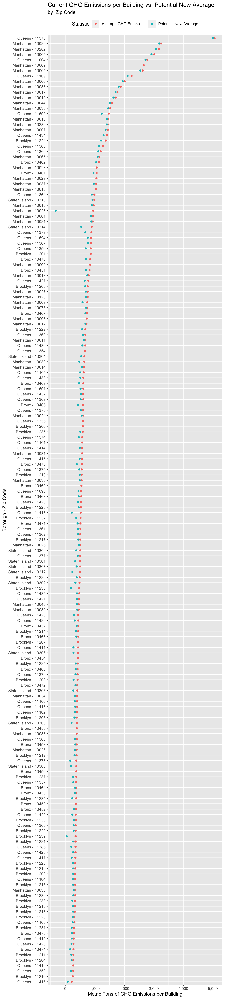
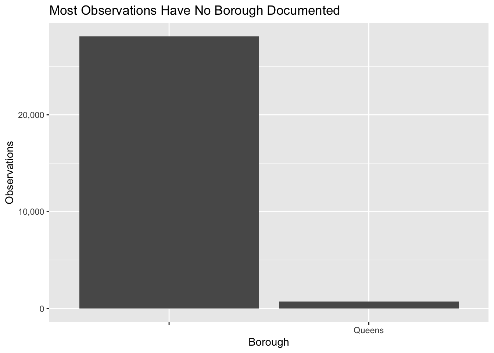

Chapter 6 Results
We begin our analysis with a basic measure of how much a community cares about the environment - how well it recycles.Specifically, we consider the diversion rate (recycled waste/total waste) of every Zone (a subgroup of a borough) documented. Unfortunately, New York City is very lacking in this measure.

Notice the flat horizontal line above the others. This is not marking the diversion rate for an NYC Zone - it is a comparison point. Specifically, it the 2019 diversion rate for Virginia. Obviously every zone in the city is falling well short of this standard.
It should be noted that a city and state may have different obstacles for their recycling; however, it should also be noted that NYC and VA are virtually the same size. New York’s population is only 200,000 people fewer than Virginia’s according to the census bureau’s website. Further, New York is one of the most well-resourced cities in the world. Simply put, we should not be falling this short. Several municipalities in Virginia have implemented single stream recycling, and the state as a whole is now outperforming. Perhaps such a policy could help.
While recycling stood out as an easy entrance point to understanding New York’s current sustainability, this is, of course, a very incomplete picture. We next decided to consider perhaps the most important measure of an area’s environmental impact = Greenhouse Gas Emissions (GHG).
We begin by considering the largest sources of GHG in New York State over time:

The elevated levels of emissions caused by transportation immediately jump out. This suggests that cars, trucks, and other motor vehicles are some of the biggest local culprits.
Interestingly, this pattern does not fully hold when considering just New York City, as stationary fuel burners represent a larger problem here:

Here, it is important to note two crucial limitations of our data. Firstly, the data set for NYC emissions only represents 1 year - 2016. It is possible that we were unlucky, and this is an outlier. Secondly, NYC Open Data does provide methodology for measurement. This is quite important for this particular question. New York is a city with many commuters, and it is unclear if emissions from cars driven by people who do not live in the city but work in it are included.
Still, caveats aside, the dip in the importance of transportation (IS THER ONE???) does coincide with zooming in on a city that prioritizes walking and public transportation, suggesting that commuter driving may be a very important subgset of transportation emissions.
On the other hand, the plot also demonstrates the clear importance of buildings when considering the city’s GHG emissions, warranting a closer look at building emissions in the city. As a first step, we consider the locations of our worst emitters:
While the 11370 zip code in Queens stands out as a particularly high emitter, Manhattan appears to be the borough with the most highly damaging buildings.
Of equal value is a better understanding of the types of buildings that are most often responsible for high emissions - shown below. Prior to considering the graph, we note that results here are filtered. Specifically, we considering only buildings with GHG emissions of 2,952 metric tons or fewer. This threshold was landed on after several rounds of graphing made it clear that anything above this threshold skewed the graph in such a way as to make it difficult to read. The buildings kept represent over 96% of all observations.

Three building type’s distributions of emissions jump out as particularly high - Wholesale Club/Supercenter, Prison/Incarceration, and Other - Utility. It is unclear what the latter references. Regarding prison, it seems fairly straightforward that a compound filled with many, many people and complex security systems would have high energy usage. The Club/Supercenter building is perhaps most interesting when considered as a pair along with Ice/Curling Rink - another fairly high distribution. It may be the case that large cooling efforts in the city are particularly bad for the environment.
Before drawing any concrete conclusions, we should, however, point out some issues with our data. This is a data set for 1 year (2019), so there is a risk that it was an aberrant year. Perhaps more importantly, as a reminder, these are only buildings covered by Local Law 84, which is based on square footage thresholds. This means that we are likely only considering the worst emissions buildings throughout the city. It’s possible that our understanding of the locales and building types most responsible for emissions would shift if we had a more complete picture.
If we were to estimate New York’s building overall, though, we may be somewhat surprised by the results. We consider the following:
First - as Local Law 84 separates our dataset based on square footage, we check whether this has a significant role in GHG emissions:

While some zero values may skew the overall picutre, there does appear to be a generally positive correlation between the two. As such, in order to estimate total emissions, we take the sum of all documented GHG emissions by the the sum of all of documented square footage - this gives us a metric of GHG emissions per square foot. The calculation gives about 0.0056 metric tons of GHG emissions per square foot.
Next, we apply this to the total square footage documented in land use data set. This dataset (with roughly 30 times as many buildings as the energy use dataset) has 5,584,887,007 total square feet documented in New York City. This comes out to a grand total of an estimate 31,099,387 metric tons of GHG emissions from New York City in 2019. To put this number into context, Google Sustainability Initiative estimates that in the same year San Francisco emitted 4,360,000 metric tons of GHG. Obviously, New York’s number is much larger. However, New York’s population is also about 9.46 times larger than San Francisco’s. So, while our estimated(!) GHG emissions are 7.13 times larger San Francisco’s, on a per person basis each of us actually responsibility for about 75.4% of the building emissions of one San Franciscan.
Having taken stock of the current state of New York’s environmental impact, we shift our focus towards potential solutions.
We
Given the importance of transportation emissions statewide, and the decrease in its importance in a less car-dependent area, we begin with a consideration of on-road vehicles. Specifically, we review electric vehicles.
To begin, we compare the United States’ overall EV adoption rate to the rest of the world.:
While the volume of EVs purchased over time is mostly a function of population size, rate of growth does not necessarily need to be. And the United States is clearly lacking in this area (especially as compared to China).
In order to understand if New York is a part of this trend or a bright spot, we consider the state’s current rebate program for Electric Vehicles.
 Similar to the country at large, we see slow adoption, even with the rebate. However, whether this is due to lack of interest is difficult to say. Beginning in late 2018, the number of vehicles purchased via the rebate has consistently outperformed expectations, and the rules of the rebate are such that not all people above this planned threshold will receive it. This could suggest that there is perhaps not an overwhelming natural desire EVs, but a healthy one for EVs with a rebate. An increased cap could potentially spur more major growth in this area.
Similar to the country at large, we see slow adoption, even with the rebate. However, whether this is due to lack of interest is difficult to say. Beginning in late 2018, the number of vehicles purchased via the rebate has consistently outperformed expectations, and the rules of the rebate are such that not all people above this planned threshold will receive it. This could suggest that there is perhaps not an overwhelming natural desire EVs, but a healthy one for EVs with a rebate. An increased cap could potentially spur more major growth in this area.
Also of note is the increase in emissions reductions via the program:

Similarly to the rebate participants, since late 2018 actual emissions reductions have exceeded planeed reductions. Of extra note, however, is that actually reductions appear to exceed planned by a larger margin that rebate participation. This suggests that, while access to the rebate may be a motivating factor, a desire the lowest emission vehicles available may be as well.
Cumualtive rebate $

I DON’T HAVE COMMENTARY FOR THIS/I THINK IT’S BASICALLY THE SAME AS THE ACUTAL VS. PLANNED LARRY
quarter rebate $  I DON’T HAVE COMMENTARY FOR THIS
Zooming out, we consider rebate amounts each year of the program: We see a somewhat linear growth pattern. While a simple line would certainly not fit the data perfectly, it does fit well enough for rough estimates of potential future usage.
Fitting a regression line to the predict rebate usage moving forward, we see that the program will run out between 2021 Q4 and 2022 Q4 (at the intersection of the red line):
This suggests that current policy could be holding the state back from a more environmentally friendly endpoint. Perhaps increasing the rebate could make this possible.